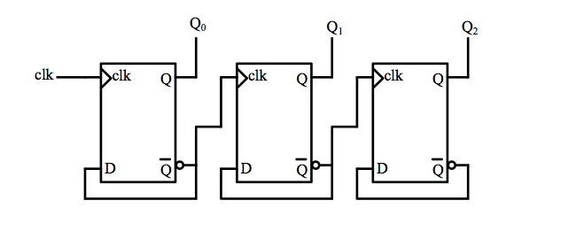
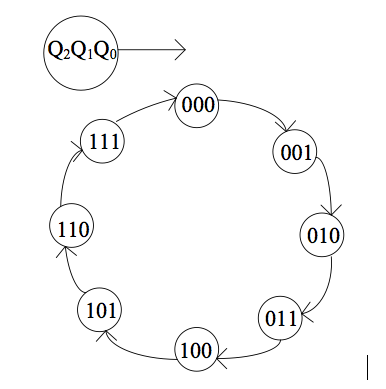
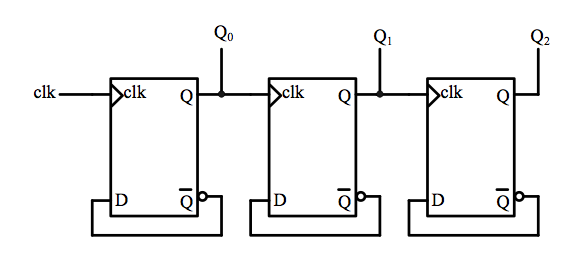
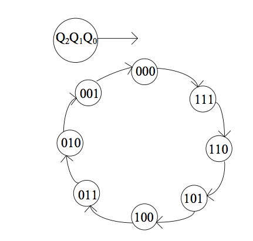
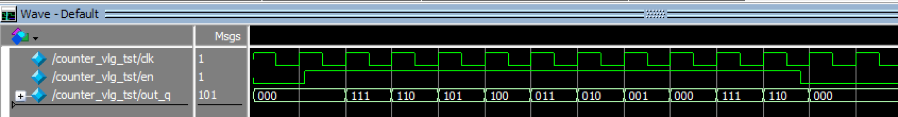
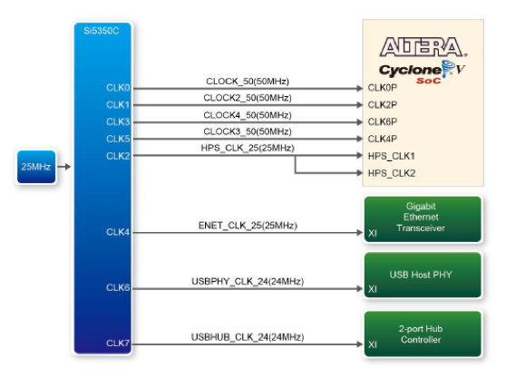
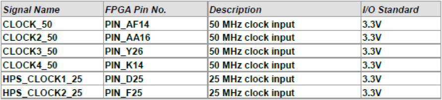

实验四 计数器和时钟
On receiving an interrupt, decrement the counter to zero.
— “Count Zero” 《零伯爵》，威廉·吉布森
在数字系统中，常用计数器来记录系统的工作状态，本实验复习了计数器的工作原理，通过介绍几种简单计数器的工作过程和设计方法、以及开发板系统时钟的使用，学习计数器的设计和定时器的工作原理。
加法计数器
利用触发器可以构成简单的计数器。图 counter01 是由3个上升沿触发的D触发器组成的3位二进制异步加法计数器，即在每个Clock的上升沿，计数器输出 \(Q_2Q_1Q_0\) 加1。

3位二进制加法计数器
图 counter02 是此3位二进制异步加法计数器的状态转移图。

3位二进制加法计数器状态图
也可以给D触发器加上“清零”和“置数”端，构成一个可以清零和置数的二进制异步加法计数器。请读者自行设计和验证此电路。
减法计数器
利用D触发器同样可以构成减法计数器，图 counter03 是由3个上升沿触发的D触发器组成的3位二进制异步减法计数器

3位二进制异步减法计数器
图 counter04 是此3位二进制异步减法计数器的状态转移图。

3位二进制减法计数器状态图
利用Verilog语言可以方便的构建计数器，表 counter01 就是一个3位二进制减法计数器，也可以用类似的代码构成加法计数器。
module vminus3(clk,en,out_q);
input clk;
input en;
output reg [2:0] out_q;
always @ (posedge clk)
if (en) out_q <= out_q -1;
else out_q <= 0;
endmodule
list-counter01 构建的减法计数器的仿真图如图 fig-countersim 所示。

减法计数器仿真图
定时器
如果在计数器的时钟输入端输入一个固定周期的时钟，那么计数器就变成了定时器。
本实验的目的是学习FPGA开发平台上时钟源的使用，并结合计数器的设计方法学习定时器的设计。
开发板上的时钟信号
DE-10 Standard开发板为Cyclone V SOC FPGA提供了四个频率为50MHz的外部输入时钟，这些时钟均可供用户使用。另外还给开放平台上的HPS提供了一个25MHz的时钟，如图 fig-clock01 所示。

开发板时钟连接
各时钟和FPGA及HPS连接的引脚如图 fig-clock02 所示：

DE10 Standard时钟引脚
将此时钟信号作为计数器的时钟信号，即可构成一个定时器：
生成需要的时钟信号
利用开发板上提供的频率为50MHz时钟信号和定时器，我们可以设计任何我们需要的时钟信号。如下实例是产生周期为1秒的时钟信号的参考代码。其中clk是系统时钟，clk_1s 是产生的周期为1秒的时钟。
always @(posedge clk)
if(count_clk==24999999)
begin
count_clk <=0;
clk_1s <= ~clk_1s;
end
else
count_clk <= count_clk+1;
请阅读、理解此段代码，并请思考为了能满足 \(0 \sim 24999999\) 的计数要求，变量 count_clk 的宽度如何设定？
实验验收内容
上板实验（基础）
请在DE10-Standard开发板上实现一个计时器，在七段数码管上直接以十进制显示。
利用开发板上的频率为50MHz的时钟，请先设计一个分频器，其输入为50MHz的时钟，输出为一个频率为1Hz，周期为1秒的时钟信号。再用这个新的频率为1Hz的时钟信号作为你设计的时钟信号，进行计数。
要求此计时器有开始、暂停和清零功能，要求从00计数到99，计数值到99后重新从零开始计数。在数码管上用两位数字显示。
可以在计时结束的时候让某一个发光二极管闪烁一个时钟周期，提示计时结束。
上板实验（拓展）
在DE-10 Standard开发板上实现一个电子时钟，时钟要求能够显示时、分、秒；还可以有以下功能：调整时间；闹铃（在特定时间LED闪烁）；秒表（提供百分之一秒精度，可以停止重启）等。
在线测试
计数器级联
在线测试
汉明码纠错